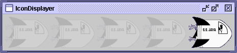

Before you implement a component that performs custom painting, first make sure that you really need to do so. You might be able to use the text and image capabilities of labels, buttons, or text components instead. And remember, you can sometimes use borders to customize the outside edges of a component and icons to paint an area that perhaps varies by component state. If you need to make changes to many standard components, you should consider doing it by customizing a look and feel such as the GTK+ look and feel.If you really need to perform custom painting, then you need to decide which superclass to use. Your component can extend
JComponent,JPanel, or a more specialized Swing component class.For example, if you're creating a custom button class, you should probably implement it by extending a button class such as
JButtonorJToggleButton. That way you'll inherit the state management provided by those classes. If you're creating a component that paints on top of an image, you might want to create aJLabelsubclass. A component that's a specialized container should probably extendJPanel. On the other hand, if you're implementing a component that generates and displays a graph, for example — with or without providing user interaction — then you might want to use aJComponentsubclass.When implementing custom painting code for a component, keep these rules in mind:
- Your custom painting code should be in a method with the signature
protected void paintComponent(Graphics).- You can — and probably should — use a border to paint the outside edges of your component.
- Except when painting the background of the component, you should avoid painting over the border area of the component. You can determine this area using the
getInsetsmethod.- Your component must honor the opaque property. If your component is opaque, it must paint its complete area using an opaque color or colors. If its opaque property is false, then you have the option of not painting over the entire component.
- Make sure that when the
paintComponentmethod exits, theGraphicsobject that was passed into it has the same state that it had at the start of the method.- To gain access to the power of the 2D graphics API, you can cast the
Graphicsparameter into aGraphics2Dobject.Besides those painting-related considerations, here are a few more rules to keep in mind:
- Your component should return reasonable size information. Specifically, you should either override the
getMinimumSize,getPreferredSize, andgetMaximumSizemethods or make sure that your component's superclass supplies values that are appropriate.- Your component should be as accessible as possible. For details, see Making Custom Components Accessible.
- You should separate out strings and resources such as images so that your component can be easily localized. More information is in Internationalization.
The following application gives an example of custom painting. It features a custom component calledIconDisplayerthat paints an icon multiple times, with all but the rightmost icon transparent. You can run the IconDisplayer application using JavaTM Web Start. Or, to compile and run the example yourself, consult the example index.The source code is in
IconDisplayer.java. Here are the main painting-related parts:public class IconDisplayer extends JComponent { ... protected void paintComponent(Graphics g) { if (isOpaque()) { //paint background g.setColor(getBackground()); g.fillRect(0, 0, getWidth(), getHeight()); } if (icon != null) { ... Graphics2D g2d = (Graphics2D)g.create(); while (/* we're not done */) { /* Paint an icon. */ } g2d.dispose(); //clean up } } ... }The first thing the
paintComponentmethod does is check whether theIconDisplayerneeds to be opaque and, if so, paint its background. IfIconDisplayerwere a subclass of something other thanJComponent, we might omit this code and just callsuper.paintComponent.The second part of the
paintComponentmethod paints the main part of the component. It creates a copy of theGraphicsobject it was handed and casts it into aGraphics2Dobject. The typecast letspaintComponentuse 2D features such as alpha compositing; the copy lets it avoid making changes to the passed-inGraphicsobject, which would have to be undone before returning.Here's a complete listing of the code that paints the icon repeatedly:
if (icon != null) { Insets insets = getInsets(); int iconWidth = icon.getIconWidth(); int iconX = getWidth() - insets.right - iconWidth; int iconY = insets.top; boolean faded = false; Graphics2D g2d = (Graphics2D)g.create(); g.getClipBounds(clipRect); while (iconX >= insets.left) { iconRect.setBounds(iconX, iconY, iconWidth, icon.getIconHeight()); if (iconRect.intersects(clipRect)) { icon.paintIcon(this, g2d, iconX, iconY); } iconX -= (iconWidth + pad); if (!faded) { g2d.setComposite(AlphaComposite.getInstance( AlphaComposite.SRC_OVER, 0.1f)); faded = true; } } g2d.dispose(); //clean up }The first thing the code does is prepare for painting icons. It gets its border size, using the
getInsetsmethod. It then uses the insets, along with the component and icon sizes, when calculating where the first icon — the rightmost one — should be painted. The icon is anImageIcon, so it's easy to get its size using methods such asgetIconWidth, and it can paint itself using theIcon-defined methodpaintIcon. The code next gets aGraphics2Dobject so that it can use alpha compositing when painting some of the icons.Next comes a bit of performance tuning. The code gets the clipping area, using the
GraphicsmethodgetClipBounds. The clipping area is the part of the component that needs to be repainted. For example, if a window covering the right half of the component goes away, then only the right half of the component needs to be repainted. After getting the clipping area, the code checks whether this clipping area intersects with the icon's current painting area. If so, it paints the icon. If not, it saves a little time by not painting the icon.After dealing with the first (rightmost) occurrence of the icon, the code invokes
setCompositeon theGraphics2Dobject, specifying parameters that make the subsequently painted icons appear to be only 10% opaque. You can find information on using alpha compositing in Compositing Graphics, a section in the 2D Graphics trail.After the
paintComponentmethod paints all the icons, there's nothing for it to do but clean up. In this case, the cleanup is as simple as disposing of theGraphics2Dobject the method created.